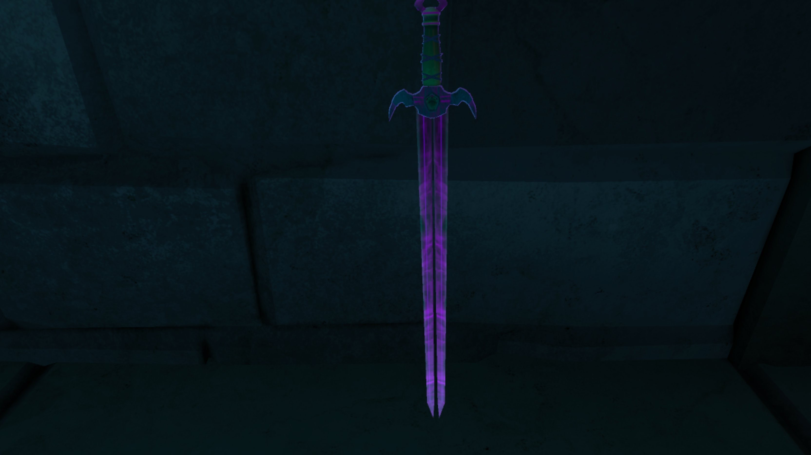
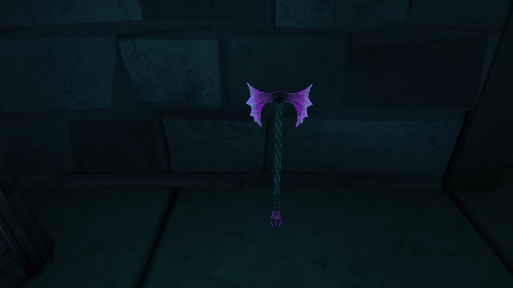
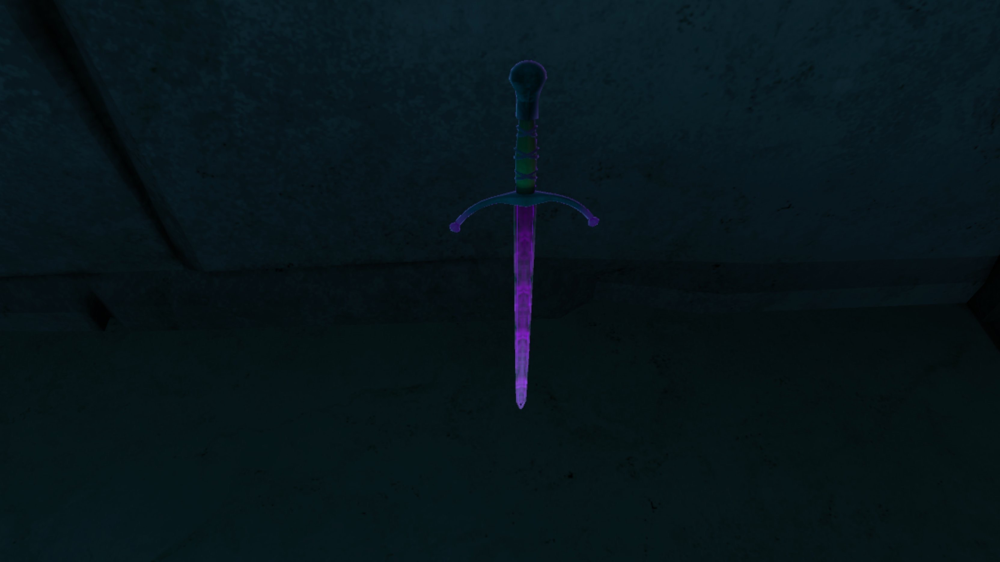

Swords

Swords are generally pretty good for most things, but unlike the next types are not throwable unless they have the throwable perk.
There are also scimitars that deal higher damage, but I don't think they can do stabbing damage.
Side weapons are also important to your build, and determine what you can do when not using your back weapon. There are four categories of side weapons.

Swords are generally pretty good for most things, but unlike the next types are not throwable unless they have the throwable perk.
There are also scimitars that deal higher damage, but I don't think they can do stabbing damage.

Axes are great. You can swing them like swords while also being throwable without a perk meaning you can have other perks taking those slots. Axes can also be held in both hands making them do more damage.
I'm pretty sure sickles are just axes that look different.
They're all the same thing with a different look. These weapons are unique in that they are the only side weapons that have the slowing perk, are throwable, and are effective against armored enemies.

I don't like daggers personally because of their low damage and the fact that they are small making them hard to parry with, but daggers are good for throwing as they come back the fastest and have exclusive access to the poison perk, which is just the poison element.